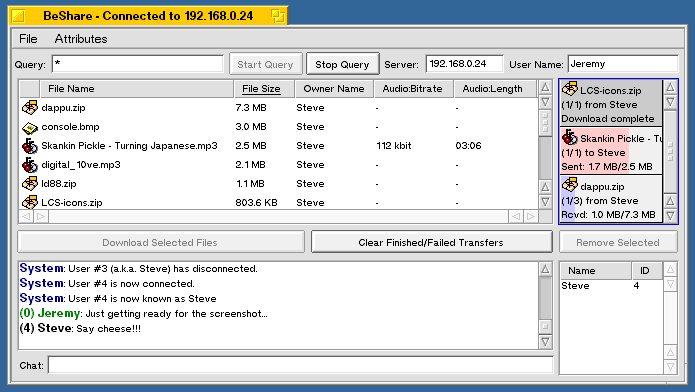
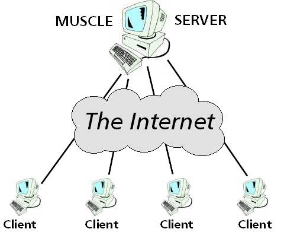
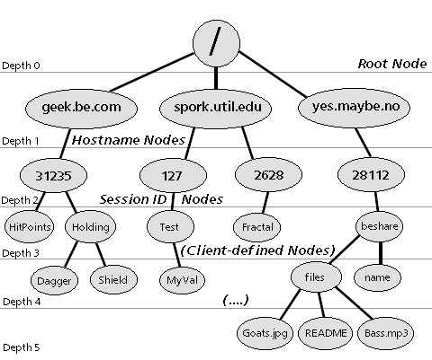
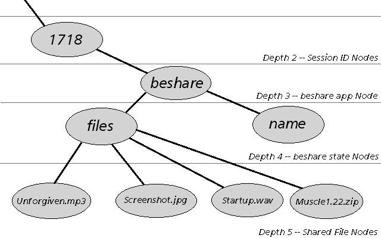

One of the more exciting capabilities of the Internet is its ability to bring groups of geographically separated people together into a shared virtual environment. Whether it's an IRC chat room, a role playing MUD, or a Quake 3 multiplayer death match, the Internet can form the "glue" that binds many computers (and their users) together and allows them to interact, affecting each other's actions as if they were together in a real place. Furthermore, a system that can dynamically assemble groups of computers together is useful in other ways as well--witness the recent rise of programs such as Napster and Gnutella, which are really just fancy matchmaking programs connecting one user's machine (the one who wants a file) with another (the one who has that file).
Creating a multiuser program like those mentioned above can be a daunting task, however. Somehow you've got to provide a way for every client computer to talk to every other client computer, and also a way for them to share and exchange data efficiently. More than that, you need a way of synchronizing your clients, so that they all present coherent information to their users. (For example, if your computer shows that you've incinerated Player X with the rocket launcher, and Player X's computer shows that you missed, there's going to be trouble!)
On the BeOS, we programmers have the same basic networking tools as anyone else: a TCP/IP stack based on the BSD "sockets" API. You can write multiuser programs directly on top of this, and many people have; but as I mentioned above, it's a lot of work. Fortunately, there is an easier way to do it. The MUSCLE toolkit, by Level Control Systems, can be employed to do the grunt work for you, leaving you more time to handle the interesting aspects of your app. MUSCLE is an open source, high level networking toolkit that implements real-time data sharing between dozens of client machines.
This article will give you a high-level view of how MUSCLE operates, and also guide you through a brief tutorial on how to write a multiuser-aware client program using MUSCLE's APIs.
As an added bonus, the example code for this article comes in the form of a fully functional MUSCLE-based file sharing program called BeShare. If you've ever used Napster or HotLine, then the purpose of BeShare should be apparent to you: You can use it to swap files with your fellow BeOS users. But since BeShare is a BeOS program, and BeOS programs are required by law to kick ass, BeShare also includes a few features that Napster and friends don't have--namely, with BeShare your queries are "live", (i.e. the results displayed on client track the server's database in real time); and BeShare leverages BeOS's database-like filesystem by allowing you to see a shared file's attributes before you download it. So you non-programmer types may want to stop here and get an idea of MUSCLE's capabilities by downloading BeShare, whereas the more technically inclined can read on to learn how it all works.
Thanks to Ben Raymond and Benton REA's PowerNET (www.bentonrea.com) for hosting the MUSCLE server machine used with this demo!

Before diving into the tutorial, here is some background information on the services MUSCLE provides to you, the programmer. This is a somewhat oversimplified summary of the information information provided in the MUSCLE Beginner's Guide, so if you've already read that, or want to cut right to the chase, you can skip this section.
In the world of BeOS programming, the BMessage rules supreme. Most every GUI class uses BMessages, and many other APIs use them as well. BMessages are so useful because they offer a safe and convenient way of packaging a chunk of typed, structured data and storing it or sending it to someone.
The Internet, on the other hand, speaks a simpler dialect of unstructured bits and bytes. When you connect to another machine via TCP, you can send him a series of bytes, and he can do the same to you. This is all well and good if you are a telnet or ftp client, but for more complex protocols you are left with the problem of parsing these bytes back into Real Data (e.g. floats, ints, strings, objects, arrays, etc). Gotchas such as byte endianness and data fragmentation make this trickier than you might think. So the first thing MUSCLE does for you is bridge the gap between messages and TCP, by converting messages to byte streams and back again for you. With MUSCLE, you can compose, send, and receive message objects without having to worry about transport or portability issues.
Note that I said "message objects" above, and not BMessages. In fact MUSCLE does not send flattened BMessage objects over the wire, and for a good reason: BMessages aren't available under Linux. Or Windows. Or PalmOS. Or... well, you get the idea. Since Be's flattened BMessage protocol is undocumented (and it's beneath my dignity to reverse-engineer it), MUSCLE introduces the muscle::Message class as a handy BMessage substitute. The muscle::Message class is extremely similar in both form and function to the BMessage class, except that it comes with source code--and like most of the MUSCLE package, the source is portable to any platform with a TCP stack and a C++ compiler. So MUSCLE programs running under BeOS can talk to MUSCLE programs running under Linux, or Windows, or any other platform you care to compile under--using MUSCLE won't lock you into a BeOS-only world. MUSCLE includes utility functions to translate muscle::Messages into BMessages and vice versa, in case you need to do that.
Another problem with the vanilla sockets API is that it is designed to use blocking I/O calls. This is great when your program is doing TCP transfers and nothing else, but if you've got GUI responsiveness to maintain and other things to do at the same time as your TCP I/O, things can get pretty hairy.
The usual solutions to this problem are to use non-blocking I/O, or do your TCP I/O in a separate thread. MUSCLE does does both of these things for you, plus it maintains incoming and outgoing message queues for each connection to ensure that your GUI remains responsive, no matter what the network conditions are like. For cross-platform MUSCLE code, this API takes the form of a MessageIOGateway object, but under BeOS a nicer multithreaded API is available. This API is embodied by the MessageTransceiverThread class, and since this is a BeOS programming tutorial, we will be concentrating our attention on that.
TCP connections always connect exactly two computers; there is no three-way calling on the Internet(*). But to be truly multiuser, a program needs to be able to communicate with an arbitrary (or at least large) number of simultaneous machines. To facilitate this, MUSCLE supplies a server program called "muscled" which acts as a sort of party line; your client program connects to muscled (which is running on a well-known central computer somewhere) and sends messages to it; muscled then forwards your messages to some or all of the other clients that are connected to it.

In addition to forwarding messages from client to client, muscled provides each client with a way to store muscle::Messages in the server machine's RAM. This may not sound like a big deal, but it's actually very useful, because other clients can download these messages at any time without bothering your client--and they can also "subscribe" to portions of the database, so that whenever their data of interest changes, they are automatically notified.
This database is tree structured, very much like an idealized Unix file system. One difference is that instead of having the notions of files and directories, each node in the tree holds a muscle::Message, and any node can have zero or more children. Each message directly underneath the root node of the tree represents the host name of a connected client machine, and each node underneath a "host name" node represents a single TCP connection from that machine. Nodes at this level are given an arbitrary (but unique) name by the MUSCLE server. Creation of nodes at deeper levels of the tree is left up to the client programs; a client program may create node hierarchies as deep as it cares to anywhere underneath its session node. (For a more complete description of server side database semantics, please refer to the MUSCLE Beginner's Guide.)
Below is a diagram that shows a snapshot of what a MUSCLE server database might look like. Note that the database is completely dynamic, so nodes may be created, modified, or destroyed at any time. The server in the diagram has four active sessions, although two of them are coming from the same client computer (spork.util.edu).

The muscled server classes are designed in such a way that the server can be easily augmented with application-specific logic should the need arise. However, even the basic server has enough functionality to satisfy the needs of many programs. Since our example program needs only the vanilla muscled server, we won't go into how to do this.
MUSCLE comes with some useful and portable utility classes, implementing such things as strings, hashtables, double-ended queues, reference counting, object pools, and so on. These classes were developed to support the MUSCLE server and networking APIs, but they can be reused in client programs if you wish. Again, these classes are outside the scope of this article, but they implement fairly common programming concepts, so they should be quite easy to figure out from the release notes, the headers and the autodocs.
(*) UDP broadcast doesn't count, as it only works over a LAN, and multicast isn't widely available yet.
Now let's start looking at the actual BeShare client program. For clarity, I've segregated the BeShare code into two categories; networking code and GUI code. The networking code lives in just two classes, one that handles the connection to the MUSCLE server, and the other than handles connections to the other BeShare clients. In this article, we are going to concern ourselves mainly with the connection to the MUSCLE server.
The GUI code consists of a number of intricately interlocking classes of sufficient complexity that I'm going to completely ignore them in this article; feel free to dive into them if you want, but we're going to talk about networking, not GUI.
BeShare's connection to the MUSCLE server is implemented by the ShareNetClient class. It is through this class that BeShare finds out what files the other clients are willing to send to it, and tell the other clients about the files it is willing to send to them. Note that this class derives from BHandler (so that it can handle messages arriving from the server), and that it holds a BMessageTransceiverThread object, which is the MUSCLE API that we use for all our network communications.
The first order of business is to create the MessageTransceiverThread object and have it initiate the TCP connection to the server. In ShareNetClient's aptly named ConnectToServer() method, we do it like this:
void
ShareNetClient ::
ConnectToServer(const char * serverName, int port)
{
DisconnectFromServer(); // clean out any old connection, as we never want two connections at once.
BMessenger toMe(this);
_mtt = new BMessageTransceiverThread(toMe);
if ((_mtt->AddNewConnectSession(serverName, port) == B_NO_ERROR)&&(_mtt->StartInternalThread() == B_NO_ERROR))
{
((ShareWindow*)Looper())->SetConnectStatus(true, false); // update GUI to say "Connecting..."
}
else
{
((ShareWindow*)Looper())->LogMessage(LOG_ERROR_MESSAGE, "Error, couldn't create connect thread!");
delete _mtt;
_mtt = NULL;
}
}
It's important to note that the AddNewConnectSession() and StartInternalThread() methods do not wait for the TCP connection to succeed or fail before it returns. Connecting across the Internet can take a long time, and we don't want to block during that time because this code is running inside our GUI window's thread. Instead, the BMessageTransceiverThread object spawns its own internal I/O thread to do the connecting. In the BMessageTransceiverThread constructor, we passed in a BMessenger that points back to our ShareNetClient object. When the BMessageTransceiverThread completes the connection, it will use this BMessenger to send an MTT_EVENT_SESSION_CONNECTED event back to us so we know we're ready to go. Similarly, if it fails to connect for some reason, or if the connection is broken later on, it will send us an MTT_EVENT_SESSION_DISCONNECTED message so we can notify the user about the failure.
Once we have a connected BMessageTransceiverThread object, we'll want to send Messages to it. When the BMessageTransceiverThread object gets these messages, it will serialize them and transmit them over the TCP connection, and the program on the far end of the TCP connection (in this case the MUSCLE server program) will receive them. Sending muscle::Messages across the network with a BMessageTransceiverThread is a little more complicated then sending BMessages with a BMessenger, but it's not too bad. Here's a simple example of how to do it:
MessageRef ref(GetMessageFromPool('Lnch');
ref()->AddFloat("TargetLatitude", 38.51f);
ref()->AddFloat("TargetLongitude", 77.02f);
ref()->AddString("Payload", "50 Megatons");
myTransceiverThread->SendMessageToSessions(ref);
Any Message you send to a BMessageTransceiverThread must be dynamically allocated off the heap. This is done to avoid unecessary data copying. While this raises the possibility of memory leaks, the upside is that MUSCLE implements a simple type of garbage collection so that you won't have to worry about tracking and deleting the messages you've allocated: once you create a MessageRef for your Message, the Message is considered to be the property of the MessageRef, and the MessageRef will delete the Message at the appropriate time. Thus it's important that you should not delete the Message yourself.
Receiving Messages is a bit different from receiving BMessages, as well. It works like this: when a Message arrives at your computer, the BMessageTransceiverThread will send an empty BMessage of type MUSCLE_SIGNAL_THREAD to your BHandler. In your BHandler's MessageReceived() method, you should have code that looks like this:
void MyHandler::MessageReceived(BMessage * msg)
{
switch(msg->what)
{
case MUSCLE_THREAD_SIGNAL:
{
uint32 code;
MessageRef next;
while(myTransceiverThread->GetNextEventFromInternalThread(code, &next) >= 0)
{
if (code == MTT_EVENT_INCOMING_MESSAGE)
{
Message * msg = next.GetItemPointer();
// handle Message here, but don't delete it!
}
// other MTT_EVENT_* codes may be handled here for detecting
// connect and disconnect events, etc.
}
}
break;
[...]
}
}
The series of Messages your code handles here will be the identical to the ones that the remote computer sent to you.
Once we've connected to the MUSCLE server, the next thing we need to do is upload to the server's database all the information we wish to share with our fellow BeShare clients. This includes our user's chosen alias (username, handle, whatever you want to call it), as well as the list of files that we are willing to share with the other BeShare clients. Remember that the MUSCLE server allows us to store this data as a subtree of Messages beneath our session node, arranged any way we like. For BeShare, I've chosen a layout that looks like this example:

Each node in the tree has a single Message associated with it. In the above diagram, the "beshare" node's message is empty; we don't use the message for anything, because the node is only there to act as a namespace. That is, it serves to help avoid conflicts with other types of MUSCLE client that might be running on the same MUSCLE server in the future.
The "name" node's Message contains a single field of B_STRING_TYPE; this field specifies the user's chosen 'handle', or screen name. Other BeShare clients will see this node and know to list our user's handle in the "online users" BListView.
The "files" node also has an empty Message, as it is used solely as a "directory" node to store file description entries under.
The nodes below the "files" node are the interesting part. As you can see, they are named after the files they represent, and the Message associated with each of these nodes contains a variable number of fields. These fields represent the advertised attributes of the file: for an MP3 file they might include fields named "Bit Rate" and "Play Length", while a JPG might have fields for Width and Height. These attributes names and values are copied verbatim from the Be File System into the Message that we upload.
To upload these nodes to the server, we send the server a single PR_COMMAND_SETDATA message. This message contains one or more sub-messages in it; one for each node we wish to create or modify. The field name of each sub-message is the node's path (relative to our session node), and the value is the Message to associate with the node. Note that a PR_COMMAND_SETDATA message will only create or update the nodes you specify; it won't remove or modify any other nodes in the database that aren't mentioned in the message. In BeShare, we find the relevant code in the BeginSharingFiles() method:
[...]
MessageRef uploadMsg = GetMessageFromPool(PR_COMMAND_SETDATA);
if (uploadMsg())
{
// scan directory, and for each file add a sub-message to our setdata message
entry_ref entryRef;
while(_shareDir.GetNextRef(&entryRef) == B_NO_ERROR)
{
BNode node(&entryRef);
if (node.InitCheck() == B_NO_ERROR)
{
// GetFileInfo() will set (nextFileRef) to hold a Message
// containing the interesting file attributes of this file.
node_ref nodeRef;
MessageRef nextFileRef;
if ((node.GetNodeRef(&nodeRef) == B_NO_ERROR)&&
(GetFileInfo(nextFileRef, entryRef, nodeRef) == B_NO_ERROR))
{
_nodeToEntry.Put(nodeRef.node, entryRef);
String nextpath = "beshare/files/";
nextpath += entryRef.name;
uploadMsg()->AddMessage(nextpath(), nextFileRef);
}
}
}
_shareDir.Rewind();
_mtt->SendMessageToSessions(uploadMsg);
}
[...]
Given our example files above, this method would create and send out a Message that looked like this:
Message what = PR_COMMAND_SETDATA field type=B_MESSAGE_TYPE name="beshare/files/Unforgiven.mp3" value=(Message containing file attributes) field type=B_MESSAGE_TYPE name="beshare/files/Screenshot.jpg" value=(Message containing file attributes) field type=B_MESSAGE_TYPE name="beshare/files/Startup.wav" value=(Message containing file attributes) field type=B_MESSAGE_TYPE name="beshare/files/Muscle1.22.zip" value=(Message containing file attributes)
When the MUSCLE server receives this message, it will make sure that these nodes are created (or updated) in our client's subtree of the database. Note that we don't have to create the "beshare" and "files" nodes explicitely; these will be created automatically by the server if necessary.
One last wrinkle about this code: You may notice that instead of allocating uploadMsg with the "new" operator, this code calls _mtt->GetMessagePool()->GetObject(). It also passes _mtt->GetMessagePool() to the MessageRef constructor instead of NULL pointers. Doing this enables the BMessageTransceiverThread's "Message recycling program", where Messages are cleaned up and saved for reuse after they've been sent, instead of being deleted. It's still perfectly okay to do things the "normal" way (as in the previous example), but using these calls will make your code more efficient by avoiding lots of memory allocations and deallocations.
Now we get to the interesting part: Say our local user has just typed in a query string and hit the "Start Query" button. Our job is to search the server-side database for any file listings that match the user's query, and display the results on screen. Actually, it's more than that--once the query is started, we want to monitor the server-side database, and any time it changes, we need to make sure our results display reflects the change. That way the user always sees the most up-to-date files listing possible.
Lucky for us, MUSCLE makes it easy to do this: We can tell the MUSCLE server which nodes we're interested in by sending it a subscription string. For our example, we'll assume the user has entered the query *.mp3, meaning that he wants to see all files whose names end in the string .mp3. Since the MUSCLE server knows how to handle regular expressions, this can be expressed directly with a subscription string that looks like this:
SUBSCRIBE:/*/*/beshare/files/*.mp3
The string after the colon is a wildcard path string, with the exact same semantics as are used by commands like "ls" in BeOS or Unix. The only difference is that this string will be applied to the MUSCLE server's node tree, rather than to the files in your filesystem. The MUSCLE server will search its node tree, and any nodes whose paths match this string will be reported to your client.
Sending the message to set up the subscription is very similar to sending a message to set a node value. In BeShare, it is done in the AddServerSubscription() method:
void
ShareNetClient ::
AddServerSubscription(const char * subscriptionString)
{
MessageRef queryMsg = GetMessageFromPool(PR_COMMAND_SETPARAMETERS);
if (queryMsg())
{
// In our example, subscriptionString is "SUBSCRIBE:/*/*/beshare/files/*.mp3"
queryMsg()->AddBool(subscriptionString, true); // the true doesn't signify anything
_mtt->SendMessageToSessions(queryMsg);
}
else ((ShareWindow*)Looper())->LogMessage(LOG_ERROR_MESSAGE, "AddServerSubscription: Error, couldn't obtain message; out of memory?");
}
Once the server receives this message, it will start start sending update messages back to us regarding the nodes that fit our description. When we're no longer interested in receiving these updates (i.e. when the user has clicked the "Stop Query" button), we can send a PR_COMMAND_REMOVEPARAMETERS message to tell the server to cancel the subscription. This is done in the RemoveServerSubscription() method (not shown here).
The update Messages sent to us by the MUSCLE server regarding subscribed nodes all have the command code PR_RESULT_DATAITEMS. Each PR_RESULT_DATAITEMS message contains the following:
Here's an example PR_RESULT_DATAITEMS message showing two additions and two deletions to the database:
Message what = PR_RESULT_DATAITEMS field type=B_STRING_TYPE name=PR_NAME_REMOVED_DATAITEMS value="/joe.benews.com/12313/beshare/files/Fork.gif" field type=B_STRING_TYPE name=PR_NAME_REMOVED_DATAITEMS value="/fred.ucsd.edu/31514/beshare/files/Spoon.jpg" field type=B_MESSAGE_TYPE name="/sue.rutgers.edu/61532/beshare/files/Knife.mp3" value=(Message containing file attributes) field type=B_MESSAGE_TYPE name="/sue.rutgers.edu/61532/beshare/files/Spork.mpg" value=(Message containing file attributes)
This message informs us that client session 12313 had removed Fork.gif from his shared directory, so that it is no longer available, and that client session 31514 has done the same with Spoon.jpg. On the other hand, it also tells us that session 61532 has added files Knife.mp3 and Spork.mpg, to his set of available files, and includes the Messages for the new nodes as the fields' values.
The code in ShareNetClient to handle the node update and removal notification messages is a bit complicated because it has to parse out the relevant values from the path strings included in the Message. A simplified version is presented below; to see the actual code, check out ShareNetClient.cpp, lines 280-337.
[...]
case PR_RESULT_DATAITEMS:
{
// Look for PR_NAME_REMOVED_DATAITEMS fields that indicate that nodes were removed from the tree
String nodepath;
for (int i=0; (msg->FindString(PR_NAME_REMOVED_DATAITEMS, i, nodepath) == B_NO_ERROR); i++)
{
int pathDepth = GetPathDepth(nodepath());
if (pathDepth == 5) // does path string have five clauses, e.g. "/hostname/sessionID/beshare/files/filename" ?
{
((ShareWindow*)Looper())->RemoveResult(ExtractSessionIDFromPath(nodepath), ExtractFilenameFromPath(nodepath));
}
}
// Now look for sub-messages that indicate nodes that were updated or added to the tree
MessageFieldNameIterator iter = msg->GetFieldNameIterator(B_MESSAGE_TYPE);
while(iter.GetNextFieldName(nodepath))
{
int pathDepth = GetPathDepth(nodepath());
if (pathDepth == 5) // does path string have five clauses, e.g. "/hostname/sessionID/beshare/files/filename" ?
{
MessageRef tempRef;
if (msg->FindMessage(nodepath(), tempRef) == B_NO_ERROR)
{
((ShareWindow *)Looper())->PutResult(ExtractSessionIDFromPath(nodepath), ExtractFilenameFromPath(nodepath));
}
}
}
}
break;
[...]
When the user types a line of text into the chat window, we want it to display in the chat boxes of the other BeShare clients. To do this, we send the chat message to the MUSCLE server and have it reflect it to all the other clients. This is easy to do, because whenever the MUSCLE receives a Message whose 'what' code it doesn't recognize as one of its own, it assumes that the Message is a client thang, to be reflected verbatim to the other clients.
By default, the server will reflect the message to all connected clients except the sender; however, you can specify that the message only be forwarded to some of the other clients by adding a PR_NAME_KEYS string field. This string represents a node path and can contain regular expressions, just like a subscription string (although this string lacks the SUBSCRIBE: prefix). If this field is present, then only sessions whose database subtrees contain a matching node will receive the message. Since we know that all BeShare sessions will have a node named "beshare" in the base level of their subtree, we add a PR_NAME_KEYS field of "/*/*/beshare" to ensure that only BeShare sessions receive the chat message.
void
ShareNetClient ::
SendChatMessage(const char * targetSessionID, const char * messageText)
{
if (_mtt)
{
MessageRef chatMessage = GetMessageFromPool(NET_CLIENT_NEW_CHAT_TEXT);
if (chatMessage())
{
String toString("/*/"); // send message to all client machines...
toString += targetSessionID; // who have the given sessionID (or "*" == all session IDs)
toString += "/beshare"; // and are beshare sessions.
chatMessage()->AddString(PR_NAME_KEYS, toString());
chatMessage()->AddString("session", _localSessionID());
chatMessage()->AddString("text", messageText);
_mtt->SendMessageToSessions(chatMessage);
}
}
}
Note that the above function is currently always called with targetSessionID set to "*", but in the future an equivalent to IRC's /msg feature might be added, in which case targetSessionID would be set to the session ID of the sole recipient of the chat "whisper".
BeShare's peer-to-peer file transfers are implemented by a different class, called ShareFileTransfer. There is enough extra code involved in the peer-to-peer transfers that a detailed description of how they work could stand on its own as a separate article. So without going into any detail, here is an example of how a file transfer from client A to client B would take place.
When the user is done using BeShare, she'll select "Disconnect" from the menu, or simply close the window in order to quit. In either case, closing the connection to the MUSCLE server is easy; to do that, just call ShutdownInternalThread() on the BMessageTransceiverThread object, and then delete it.
In this article, I've attempted to show how MUSCLE can be used to create a simple shared multiuser environment. While the program used as an example shares only file attribute information, it would be just as easy to use MUSCLE to communicate the state of a virtual world, or the state of an ongoing distributed scientific calculation. It's my hope that MUSCLE can encourage the development of these sorts of programs, and also other fun and useful programs whose design and function have yet to be imagined.